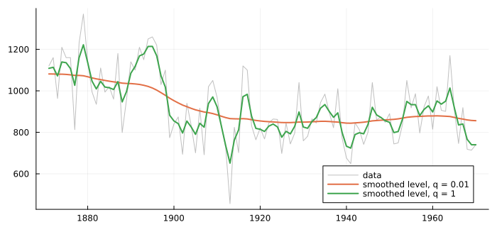
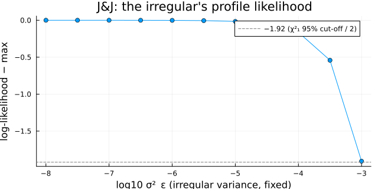
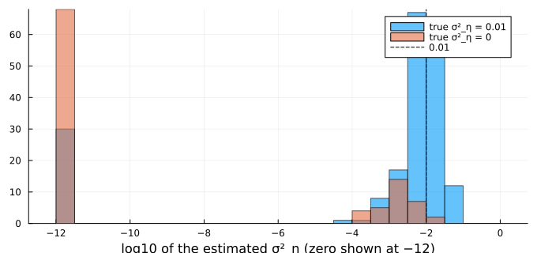
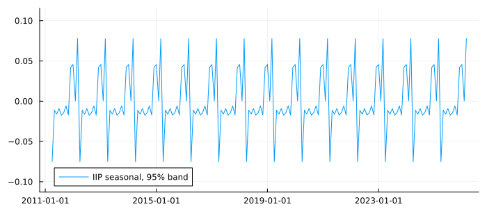

When a Component Stops Moving
using TSAnalytics, Plots, DelimitedFiles, Statistics, Random
nile = readdlm(TSAnalytics.NILE, ',', skipstart = 1)[:, 2]
calm = fit_uc(nile; level = :stochastic, params = [15000.0, 150.0]) # q = 0.01
jumpy = fit_uc(nile; level = :stochastic, params = [15000.0, 15000.0]) # q = 1
println("log-likelihood at q = 0.01: ", round(calm.loglik, digits = 2),
" at q = 1: ", round(jumpy.loglik, digits = 2))log-likelihood at q = 0.01: -637.04 at q = 1: -642.78lc, lj = uc_decomposition(calm).level, uc_decomposition(jumpy).level
plot(1871:1970, nile; color = :gray, alpha = 0.5, label = "data", size = (700, 320))
plot!(1871:1970, lc; linewidth = 2, label = "smoothed level, q = 0.01")
plot!(1871:1970, lj; linewidth = 2, label = "smoothed level, q = 1")
The same Nile, the same model, two signal-to-noise ratios fixed by hand. At q = 0.01 the level barely moves and the dam appears as a slow slide; at q = 1 the level chases every wet and dry year. Cowpertwait & Metcalfe (2009, Fig. 12.4) make the point with simulated data: the variances are not a detail of the fit, they are the decomposition. The data prefer the calmer of these two, and prefer the estimated q ≈ 0.1 of Chapter 52 to both.
This chapter is about the extreme case, when the estimate of a variance is zero — and why that is the most informative thing a structural model can say.
A variance of zero is a statement
Hyndman & Athanasopoulos (fpp, §9.1, printed pp. 94–95, PDF 94–95) list what each degenerate case of the local linear trend means:
σ²_η = 0: the level moves only through the slope — no shocks of its own;σ²_ζ = 0: the slope is constant — a deterministic linear trend;σ²_η = σ²_ζ = 0:y_t = μ_0 + t β_0 + ε_t, a straight line and noise;σ²_ω = 0: the seasonal pattern repeats exactly every year.
Each is a substantive claim about the series, readable straight off the estimates. That is the reason the package never moves a variance estimate to make it look better: a variance estimated at 1e-17 is reported as 1e-17, and one estimated at zero as zero.
What the likelihood looks like at the edge
The irregular of the J&J model in Chapter 52 was estimated at essentially zero. Fix it at a range of values, re-estimate the rest each time, and record the log-likelihood — the profile likelihood:
y = log.(dataset("jj").value)
grid = 10.0 .^ (-8:0.5:-3)
prof = [fit_uc(y; level = :stochastic, seasonal = 4,
fixed = Dict("sigma2.irregular" => g)).loglik for g in grid]
at0 = fit_uc(y; level = :stochastic, seasonal = 4, fixed = Dict("sigma2.irregular" => 0.0)).loglik
println("profile log-likelihood at σ²_ε = 0: ", round(at0, digits = 4))
println("lost at σ²_ε = 1e-6, 1e-5, 1e-4, 1e-3: ",
round.(at0 .- prof[[5, 7, 9, 11]], digits = 4))profile log-likelihood at σ²_ε = 0: 65.1404
lost at σ²_ε = 1e-6, 1e-5, 1e-4, 1e-3: [0.0016, 0.0159, 0.1631, 1.9075]plot(log10.(grid), prof .- at0; marker = :circle, label = "", size = (640, 320),
xlabel = "log10 σ²_ε (irregular variance, fixed)", ylabel = "log-likelihood − max",
title = "J&J: the irregular's profile likelihood")
hline!([-1.92]; color = :gray, linestyle = :dash, label = "−1.92 (χ²₁ 95% cut-off / 2)")
The maximum is at zero, and the profile is nearly flat for six orders of magnitude: it has lost only 0.16 by 1e-4 and does not reach the 95% cut-off until about 1e-3, so the data cannot tell any irregular variance below that from none. Two consequences follow. A boundary estimate is decided by the optimiser's path as much as by the data — which is why Tsay's S-PLUS fit of this model reported σ_ε = 2.0e-06 and statsmodels reports 1.3e-05, while both agree with this package on the other two variances to five digits. And comparing a boundary estimate across implementations, as a test of either, is comparing optimisers.
The pile-up
The flat profile has a sharper consequence. Simulate a local level whose level variance is small but not zero — q = 0.01 — a hundred observations at a time, and estimate it:
rng = MersenneTwister(53)
function simulate_ll(n, s2e, s2n, rng)
μ = 10 .+ cumsum(sqrt(s2n) .* randn(rng, n))
return μ .+ sqrt(s2e) .* randn(rng, n)
end
small = [uc_local_level(simulate_ll(100, 1.0, 0.01, rng)).params[2] for _ in 1:200]
none = [uc_local_level(simulate_ll(100, 1.0, 0.0, rng)).params[2] for _ in 1:100]
println("true σ²_η = 0.01: estimated at zero (< 1e-6) in ", round(100mean(small .< 1e-6), digits = 1), "% of 200 fits")
println("true σ²_η = 0: estimated at zero (< 1e-6) in ", round(100mean(none .< 1e-6), digits = 1), "% of 100 fits")true σ²_η = 0.01: estimated at zero (< 1e-6) in 15.0% of 200 fits
true σ²_η = 0: estimated at zero (< 1e-6) in 68.0% of 100 fitsfl(v) = log10.(max.(v, 1e-12))
histogram(fl(small); bins = -12:0.5:0, alpha = 0.6, label = "true σ²_η = 0.01", size = (680, 320),
xlabel = "log10 of the estimated σ²_η (zero shown at −12)")
histogram!(fl(none); bins = -12:0.5:0, alpha = 0.6, label = "true σ²_η = 0")
vline!([-2]; color = :black, linestyle = :dash, label = "0.01")
When the true variance is small, about 15% of the estimates still land exactly on zero; when it is zero, about two thirds do, and the rest are small and positive. This pile-up is a property of the likelihood, not a fault of the optimiser: with a hundred noisy observations, a little level movement is often indistinguishable from none, and the maximum is then at the edge. Shephard & Harvey (1990) worked out its size for the local level. A zero estimate is therefore weak evidence of a zero variance — strong evidence only that the data cannot tell a small variance from none.
Testing whether a component moves
A likelihood-ratio test of σ² = 0 must allow for the boundary: under the null the estimate is at zero about half the time, and the statistic is then exactly zero. Its null distribution is the 50:50 mixture of a point mass at zero and χ²₁ (Self & Liang 1987), so the p-value is half the usual one. Is the J&J seasonal evolving, or fixed?
evolving = fit_uc(y; level = :stochastic, seasonal = 4)
fixedseas = fit_uc(y; level = :stochastic, seasonal = 4, seasonal_stochastic = false)
LR = 2 * (evolving.loglik - fixedseas.loglik)
p = 0.5 * TSAnalytics._chisq_ccdf(LR, 1) # half the χ²₁ tail: the boundary correction
println("LR = ", round(LR, digits = 2), " p (boundary-corrected) = ", round(p, sigdigits = 3))LR = 44.47 p (boundary-corrected) = 1.29e-11Overwhelming: the seasonal pattern of J&J's earnings changed over the two decades, as the growing amplitude in Chapter 52's figure showed. (Both models leave out the same four diffuse periods, so the likelihoods are comparable.) Run against the IIP's seasonal, which was estimated at zero, the statistic would be exactly zero — the data cannot reject a fixed calendar.
What a frozen component looks like
iip = dataset("iip_india")
mi = fit_uc(log.(iip.value); level = :stochastic, seasonal = 12)
di = uc_decomposition(mi)
println("seasonal variance: ", mi.params[end], " level variance: ", round(mi.params[2], digits = 5))seasonal variance: 9.53320320848003e-20 level variance: 0.00243plot(iip.date, di.seasonal; ribbon = 1.96 .* di.seasonal_se, label = "IIP seasonal, 95% band",
size = (700, 300), legend = :bottomleft)
A component with a variance at zero is a fixed pattern, and it looks like one: the same twelve numbers every year, with a band that narrows to the uncertainty about those twelve numbers rather than widening with distance from the data. Cowpertwait & Metcalfe's Fig. 12.6 shows the same thing for a component given a tiny variance by hand — a line that "moves" only on an axis scaled to 1e-3.
R's StructTS returns pmax(estimate, 0). A variance it reports as 0 may be an optimum at zero or a negative number clipped to zero, and the output cannot tell you which — for the one parameter value that fpp (printed pp. 94–95) reads as a structural statement about the series. statsmodels and this package parameterise the variances so that they cannot go negative, and report the optimum as found: on UKgas the level variance comes back as 5e-17, small and positive, where StructTS prints 0.
The variances are estimated on the log scale, so the optimiser can approach zero but never cross it — and that is also why it can wander off towards −∞ on a flat profile like the one above and never return. fit_uc starts from three scales of the component variances and keeps the best; from the single default start, a J&J model with a trigonometric seasonal stopped at a log-likelihood of 56 against the true 80.5. And holding a variance at exactly zero makes the likelihood finite but its automatic derivative NaN — a combination the line search cannot survive, which is now caught before it reaches it. Both were found by writing this chapter.
Summary
- The variances are the decomposition: fixed at different values, the same model gives different components.
- A variance at zero says a component is fixed, and is never manufactured by clipping.
- The likelihood is flat near the boundary, so zero estimates pile up even when the truth is small and positive, and boundary estimates differ across implementations without either being wrong.
- Testing
σ² = 0needs the boundary-corrected, half-χ²₁, p-value.
See also
- Chapter 52 — the models themselves
- Manual: Unobserved Components
- Chapter 37 — why the first periods are left out